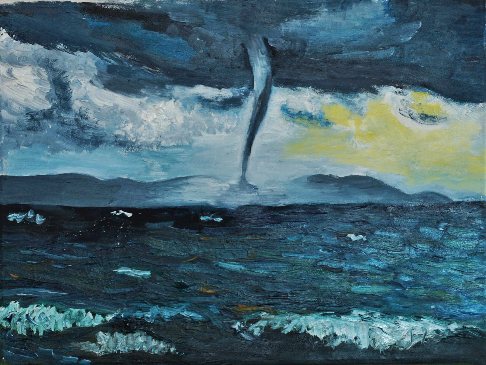

Образование
ДХШ №2
2006-2010 Подготовительные курсы
2011-2014 Основные классы ИЗО
2018-2022 НОУ ВО «ТИБ» Дизайн среды
Заметив в детстве интерес к рисованию, родители записали меня в художественную школу на
курсы. Решив углубиться в изучение основ рисования,я успешно сдала вступительные
экзамены и поступила в основные классы ИЗО, в последствии получив диплом.
Я захотела связать свою будущую профессию с творчеством, поэтому поступила на дизайнера
в ТИБ, где художественным дисциплинам отдавалось много часов.
2016-2018

Смерч на озере
16.05.16
Устав от строгости академического рисунка и живописи, я пробовала использовать новые
материалы. Больше всего меня увлекала именно живопись.
Мне хотелось найти материал, с помощью которого я смогу наиболее точно передать
настроение и свои переживания. Однажды я купила холсты и масляные краски. Я не училась
работе с маслом, работала с краской так, как чувствовала.
Мои первые работы маслом казались мне тяжелыми. Они были пастозными, долго сохли,
порой я смешивала краски на самом холсте, создавая пейзажи я чувствовала умиротворение.
Тогда и сейчас я пишу картину за один сеанс. Работы, выполненные в таком стиле точно
отражали бурю чувств и эмоций, которая захлестывала меня в подростковые годы. Я искала
себя и свой стиль.
2019-сейчас
 Бескрайнее море
31.08.21
Постепенно моя пастозная живопись становилась все мягче. Сейчас мои работы выглядят
Бескрайнее море
31.08.21
Постепенно моя пастозная живопись становилась все мягче. Сейчас мои работы выглядят
спокойнее, но иногда мне хочется добавить былой экспрессии.
Для того, чтобы описать характер моей живописи, наверно подойдет понятие Пейзаж -
настроения. Меня вдохновляет природа. Изображенный на холсте характер пейзажа
отражает мое состояние на момент создания картины.